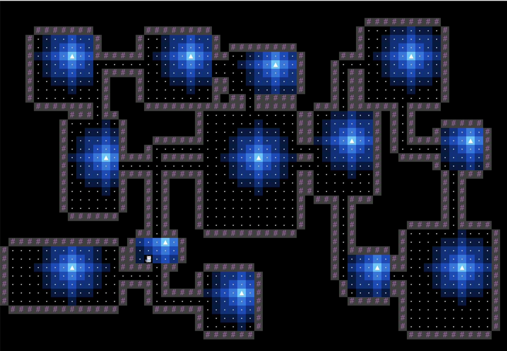
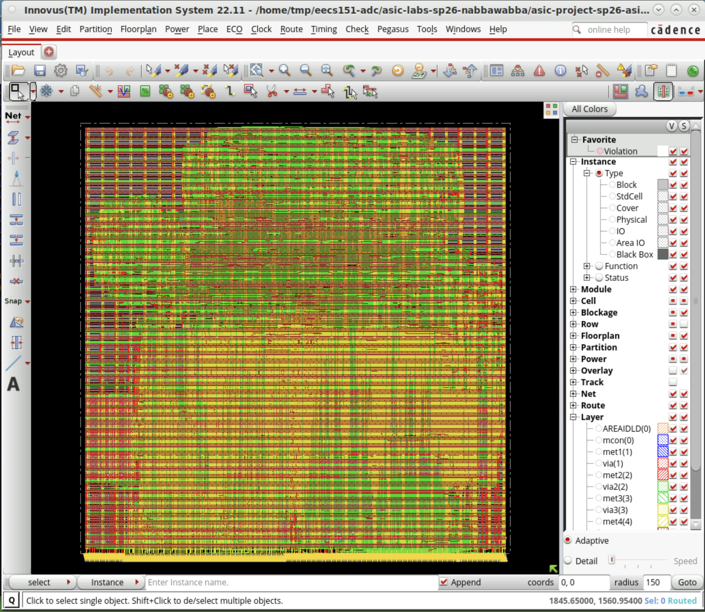

Nice to meet you! Welcome to my personal website!
EECS @ University of California, Berkeley
Designing thoughtful systems, from chips to human-facing experiences.
I'm Jennifer, an EECS sophomore interested in computer architecture, ASIC design, and the ways AI can be used to improve complex systems.
- Computer Architecture
- ASIC Design
- Machine Learning
An artistic self portrait that I made in pen.
Poker is a hobby of mine, here I am playing at the Asian Poker Tour
Currently
Exploring AI for architecture optimization and semiconductor anomaly detection.
About
A technical focus with room for personality.
Hi, I'm Jennifer, a sophomore studying Electrical Engineering and Computer Science at UC Berkeley. I'm passionate about chip design and optimization, especially in ASIC design and the ways AI can be used to advance computer architecture.
I'm currently exploring these interests at BFAI Semiconductors, where I work on applying computer vision to detect anomalies in the semiconductor manufacturing process.
Outside the screen, you can usually find me figure skating, painting, or playing poker.
What I care about
Building efficient, elegant systems across hardware and software, with a bias toward technically ambitious work.
What I’m learning
Computer architecture, digital design and ICs, machine learning, and the fundamentals behind scalable systems.
Beyond engineering
Figure skating, graphic art, and poker all shape how I think about discipline, intuition, and pattern recognition.
Projects
Projects across hardware, software, and design.
Take a look at some of my projects, which range from technical deep-dives to creative explorations.

Procedurally Generated Dungeon Game
2025A seed-based dungeon crawler that generates connected rooms and hallways, replacing traditional combat with a hazard-defusing objective.
The layout above is generated from a seed-based system of rooms and hallways, with hazards replacing traditional combat as the core challenge.

3-Stage RISC-V CPU Project
2025A three-stage processor project focused on building and testing a RISC-V CPU in SystemVerilog, with supporting memory and cache-related components.
The implementation view above shows the routed physical layout of the project and ties the architecture work to backend chip design.
Resume
Coursework, teaching, and technical foundations.
Education
University of California, Berkeley
B.S. in Electrical Engineering and Computer Science
Expected May 2028 · GPA: 3.75/4.00
Experience
- CSM16A Senior Mentor
- CS61A Academic Intern
- Cal Women's Network Project Lead
Selected Coursework
- Computer Architecture
- Digital Design and IC
- Machine Learning
- Intro to AI
- Data Structures and Algorithms
- Signals and Systems

Contact
Reach out for internships, collaborations, or a quick hello.
This is my email and linkedIn, but I’m also open to connecting on Instagram or other platforms. Feel free to reach out about anything — I’m always happy to chat about tech, projects, or potential opportunities.